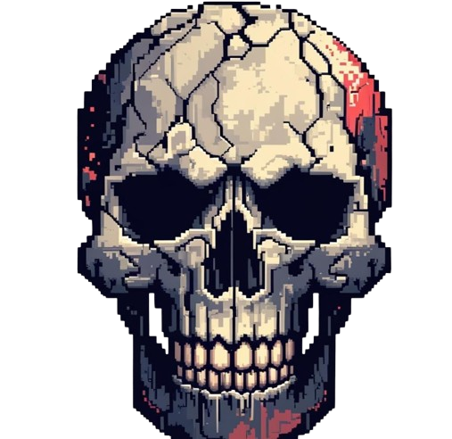
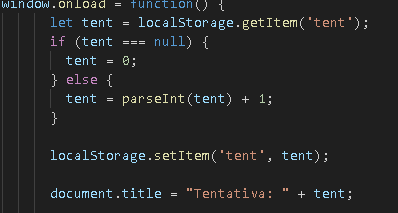
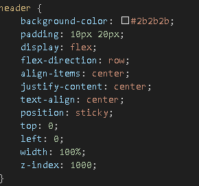
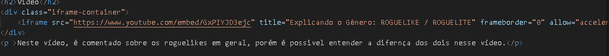
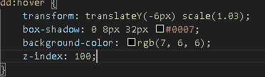
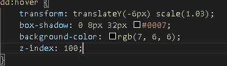

página BioHazard
Olá! Meu nome é João Victor, e eu tenho 15 anos, como podem ver pelo site, eu sou viciado em roguelites, jogo eles desde 2019 e tenho muito carinho por eles.
Esse site foi feito 100% por mim, com ajuda do aplicativo canva para fazer a logo do site.
Atualmente estudo no CEFET-MG no curso de informática.
Segredos
Você reparou nos segredos do site? os itens opcionais desse trabalho.
- Primeiro segredo: o título da página inicial muda toda vez que você reinicia ou entra nela, sua tentativa aumenta em 1, um segredo que referência as inúmeras runs dos roguelites, isso feito com LocalStorage no js. 
- Segundo segredo: o header está fixo(position: sticky) no topo da página, para você poder voltar ao topo ou ir para outras páginas rapidamente. 
- Terceiro segredo: tentei deixar o site o mais responsivo possível até o momento.
- Quarto segredo: esse não é tão difícil de perceber, mas ao final da página inicial, há um vídeo que contém mais sobre o assunto, fiz isso utilizando iframe. 
- Quinto segredo: caso você clique no card de cada jogo que eu recomendei, você irar para a página da steam do mesmo, para ter uma visão gerel, isso tudo feito em js:
 Além disso, ao passar o mouse sobre eles, haverá uma transformação: 
Além disso, ao passar o mouse sobre eles, haverá uma transformação: 
Créditos
No desinvolvimento desse trabalho, fiz o uso de imagens e vídeos, aqui estão os créditos:
- Imagens do jogo rogue, capas dos jogos Hades, Enter The Gungeon, Wizard of Legend e Dead Cells retiradas da Steam.
- Vídeo final retirado do Youtube, no canal Nação Indie.
Terceira Página
Na terceira página, há um joguinho simples que eu fiz em JavaScript, inspirado no jogo Vampire Survivors, onde você tem que sobreviver o maior tempo possível contra inimigos que aparecem aleatóriamente na tela, pretendo adicionar mais coisas nele futuramente, pois ainda não sei muito, usei alguns sites e vídeos para montá-lo, o jogo só funciona no computador, ainda não sei fazer coisas para mobile.
Em caso de bugs, fale comigo, tentarei arrumar futuramente!